Striplys Window Talks is a conceptual narrative platform that reimagines IKEA showrooms as immersive emotional archives.
The project transforms personal stories into visual narratives using the Striplys Window — a real-time memory visualizer recorded live within authentic living simulations.
Modern retail environments often prioritize transactions over connection. While IKEA creates simulations of life, there is a missing emotional bridge between the product and the user's lived history.
Digital audiences are seeking "slower" content — authentic, reflective experiences that ground them in a world of high-velocity noise.
Research revealed that IKEA spaces are tied to life transitions. Peanuts provides the vocabulary for the vulnerability inherent in those moments.
Based on the architectural project slides, the following is a structured summary of the proposed podcast ecosystem — a soulful collaboration merging IKEA's spatial intelligence with the emotional honesty of Peanuts.
AUG: Back to School · MAR: Spring Renewal · OCT: Mental Health Day
Recruitment is split into two primary channels to capture authentic memories from IKEA's global community.
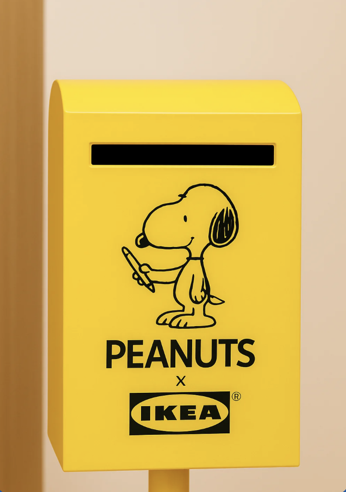
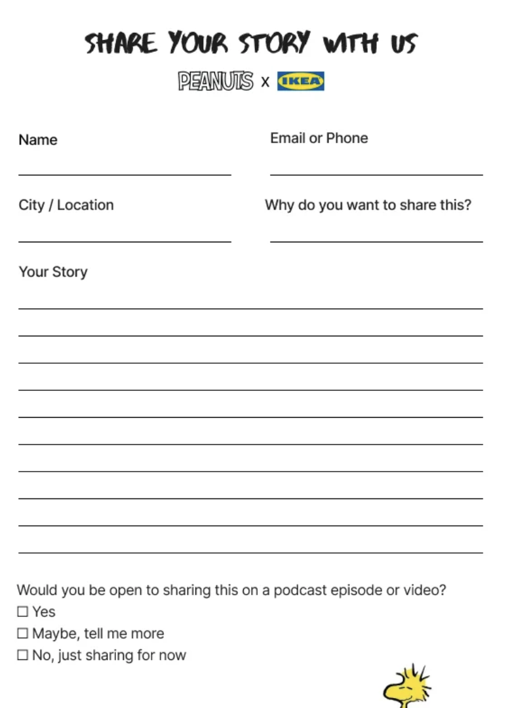
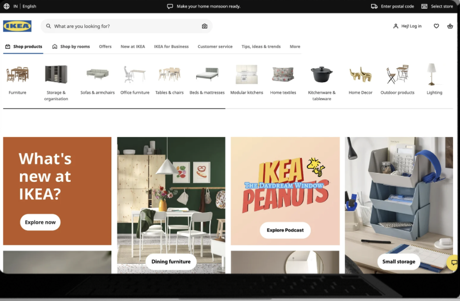
A behind-the-scenes look at the set design and spatial atmosphere that grounds each recording session in the emotional language of home.
To ensure high quality, we implement a strict 5-step editorial protocol governing every conversation and production choice.
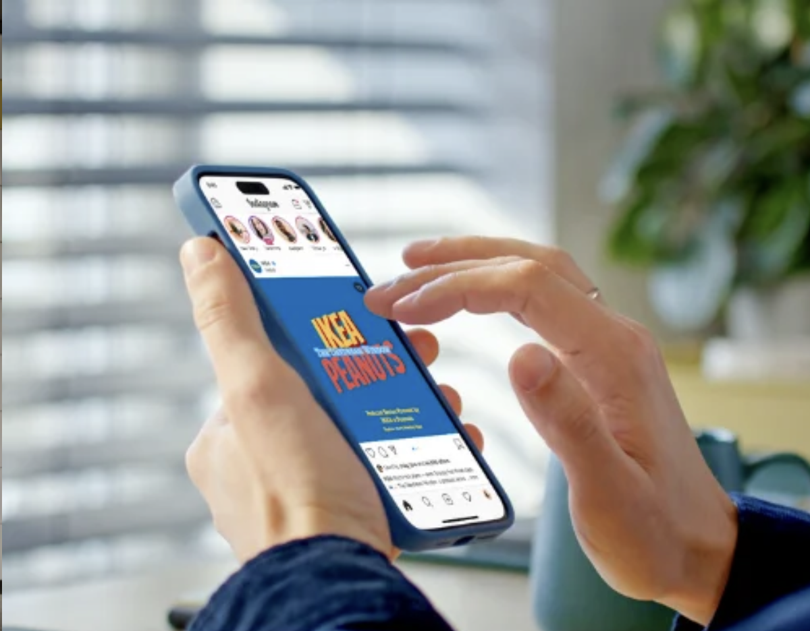
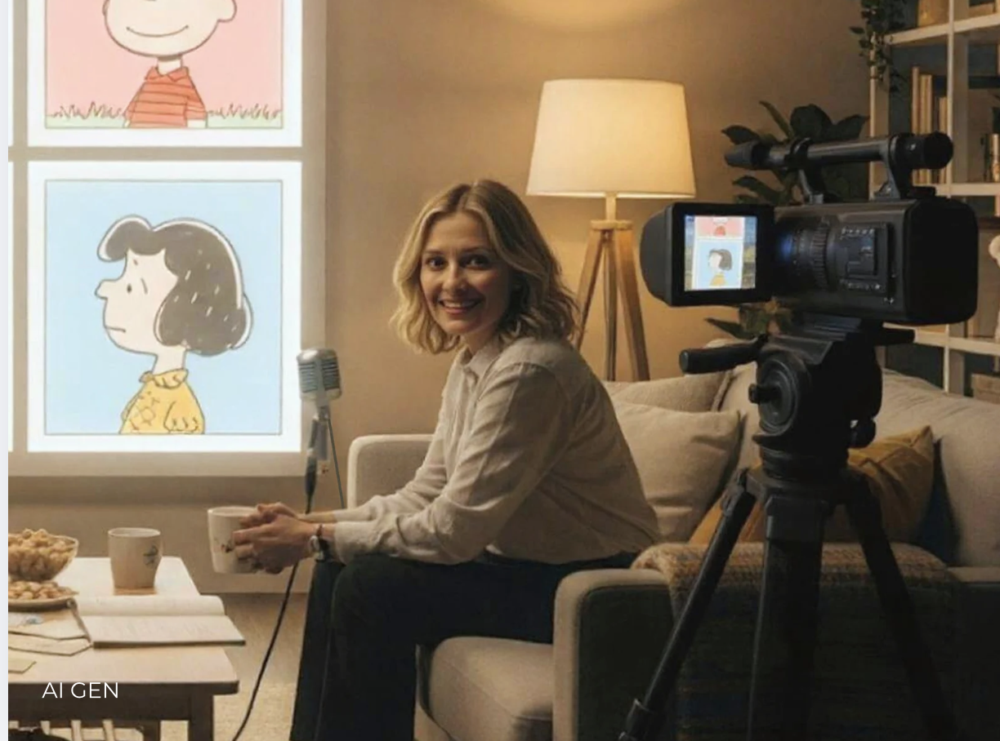
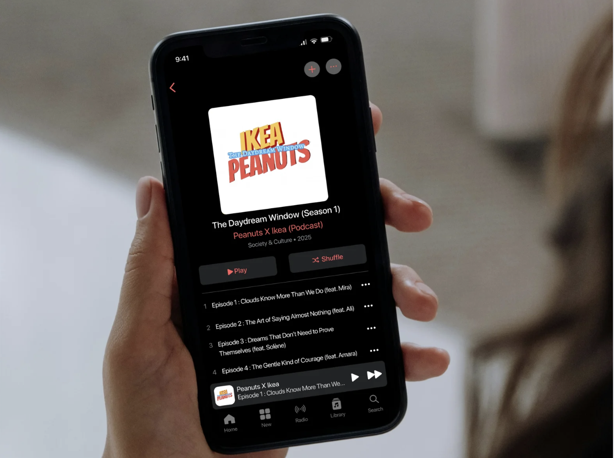
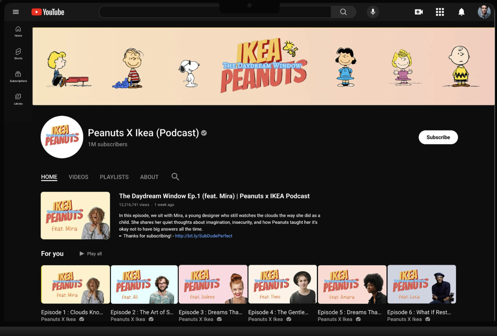
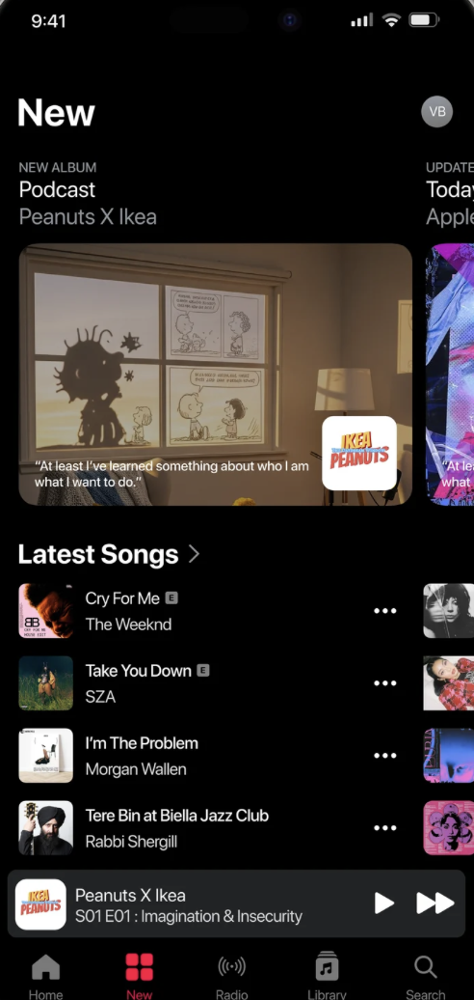
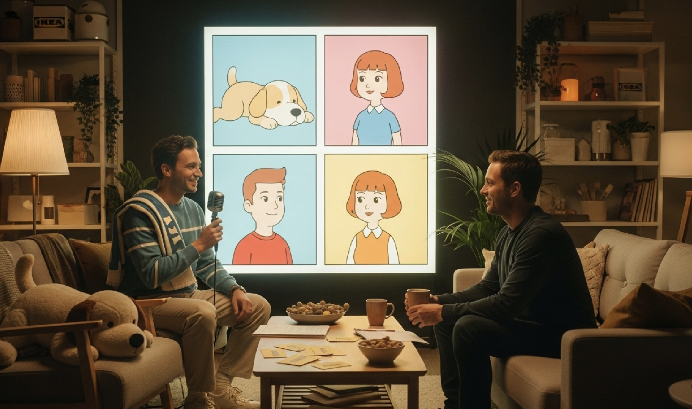
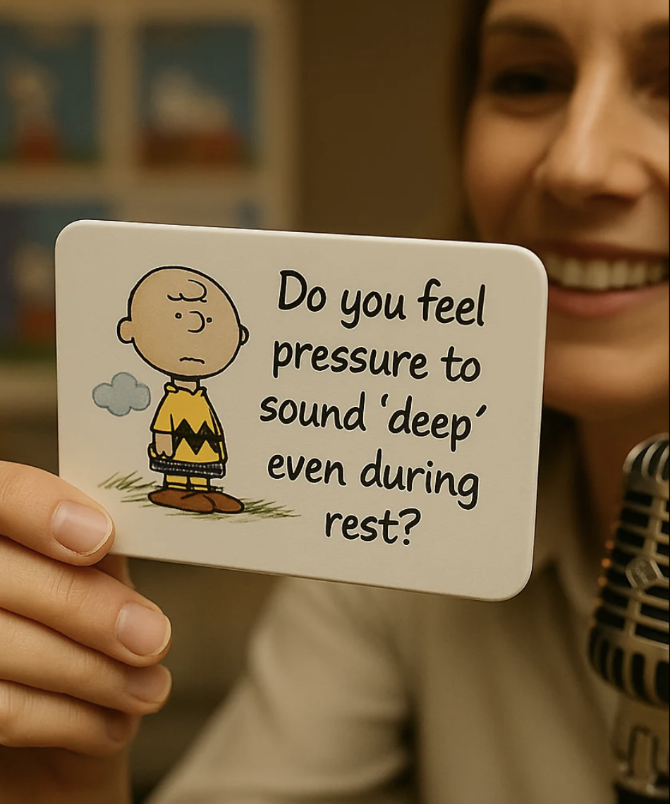
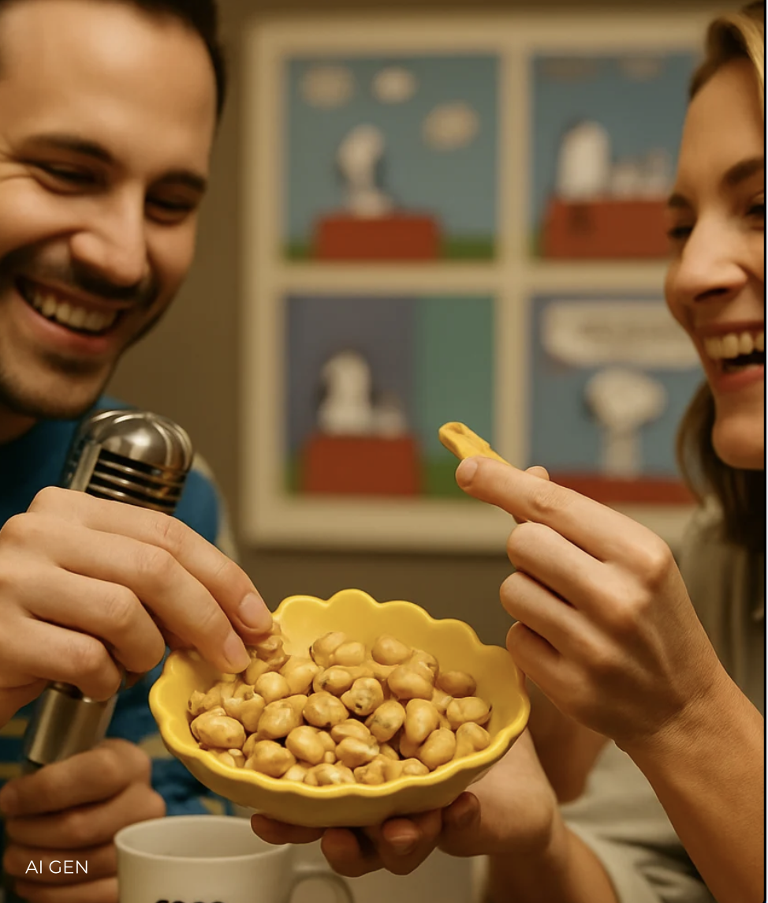
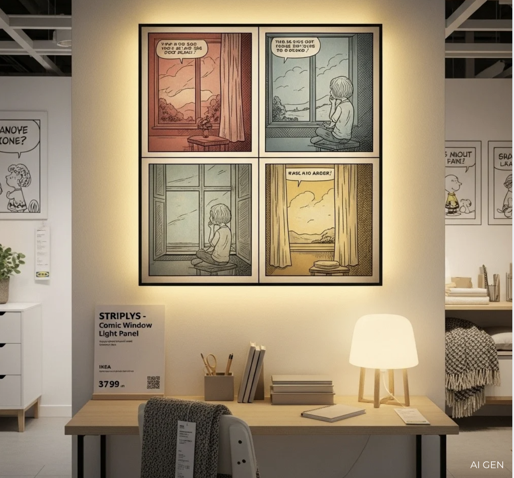
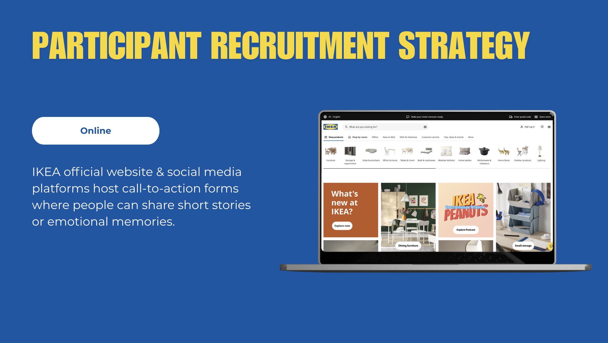
Stronger brand loyalty and longer engagement through narrative ownership.
Renewed cultural relevance by integrating nostalgia into modern lifestyle.
The final solution demonstrates how:
Rather than designing a podcast alone, the project created:
an emotionally intelligent service ecosystem where people feel seen, safe, nostalgic, and connected through the language of home.